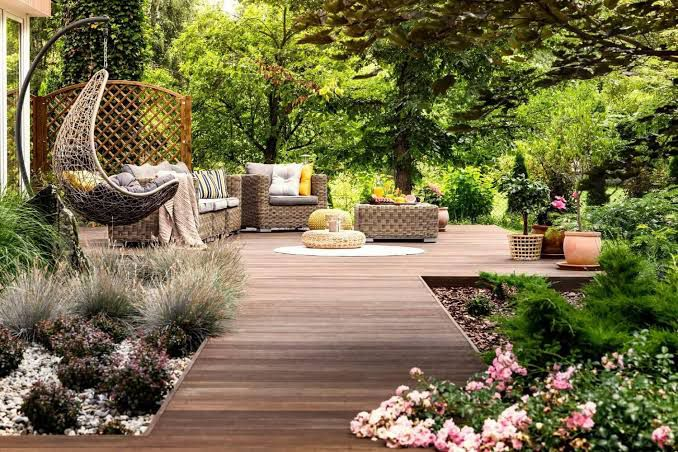
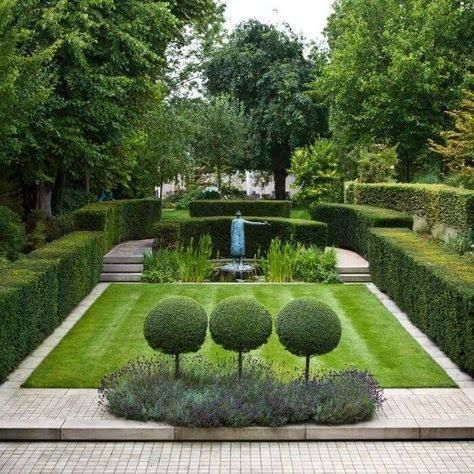
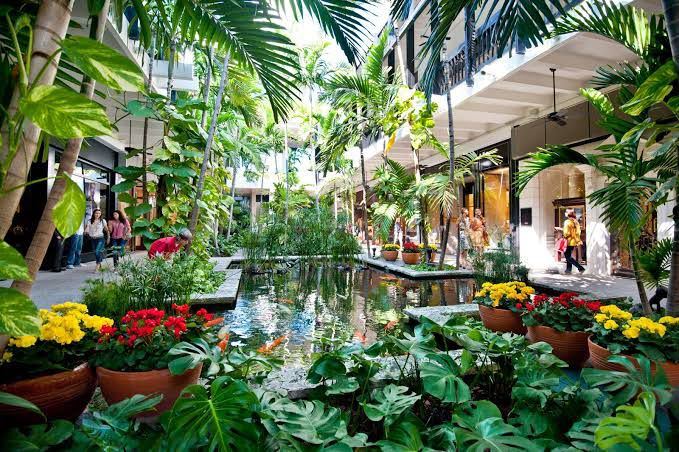
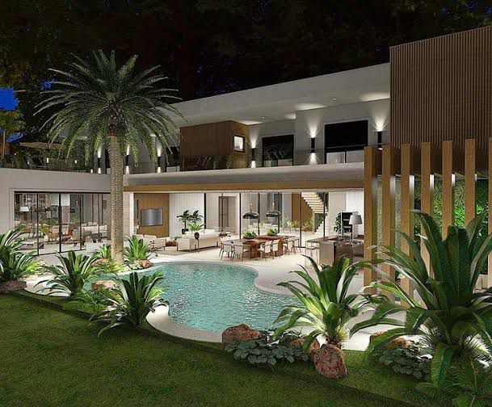

O serviço de jardinagem e paisagismo oferecido pela Indoorplant garante a valorização e embelezamento ao ambiente transformando-o em um local harmônico e para os mais diversos empreendimentos, como:
Indústrias;
Prédios comerciais;
Condomínios;
Clubes.

Ajuda profissional é essencial para um serviço de jardinagem e paisagismo de qualidade e que ofereça inúmeros benefícios, como certeza dos cuidados com o meio ambiente, que é essencial para os negócios se adequarem.

O serviço de jardinagem e paisagismo da Indoorplant é executado por profissionais capacitados, com estudos dos ambientes para melhor adaptação de plantas. Com a Indoorplant você pode tornar o seu local de trabalho um ambiente mais sustentável com a ajuda de técnicos especialistas que, além do atendimento personalizado, desenvolve problemas com base em:
- Ética;
- Comprometimento;
- Responsabilidade;
- Autosustentabilidade.

CONHEÇA AS ATIVIDADES INCLUSAS NO SERVIÇO DE JARDINAGEM E PAISAGISMO - Implantação de paisagismo;
Construção e manutenção de jardim;
Plantio de mudas e podas;
Controle e combate a pragas;
Montagem de vasos ornamentais;
Transplantio;
Importação da flora sobre encomenda.